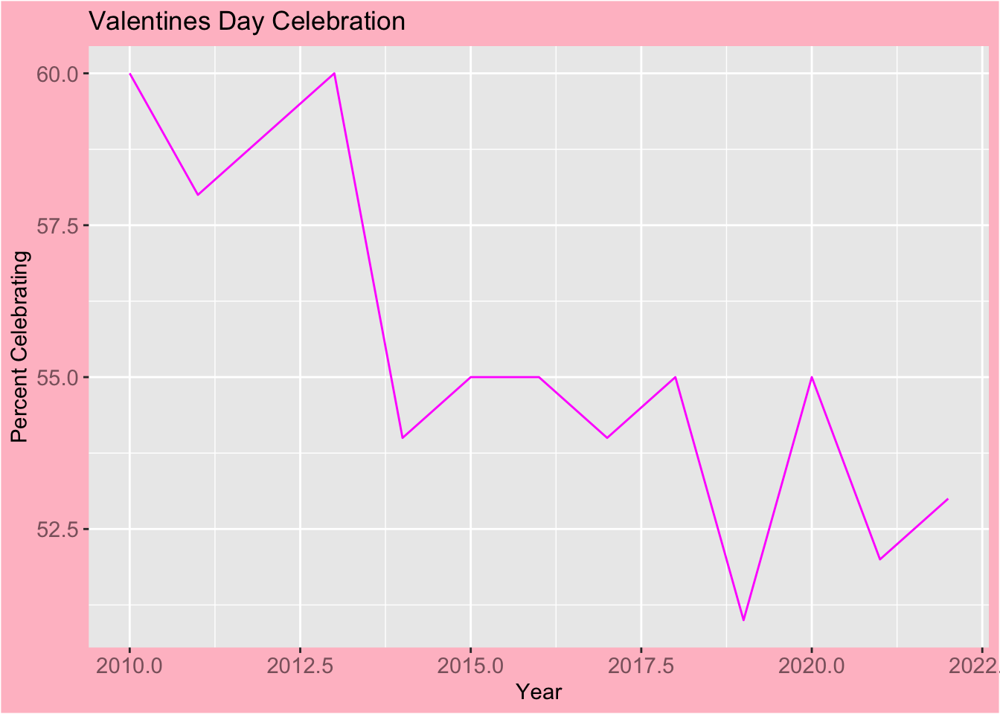
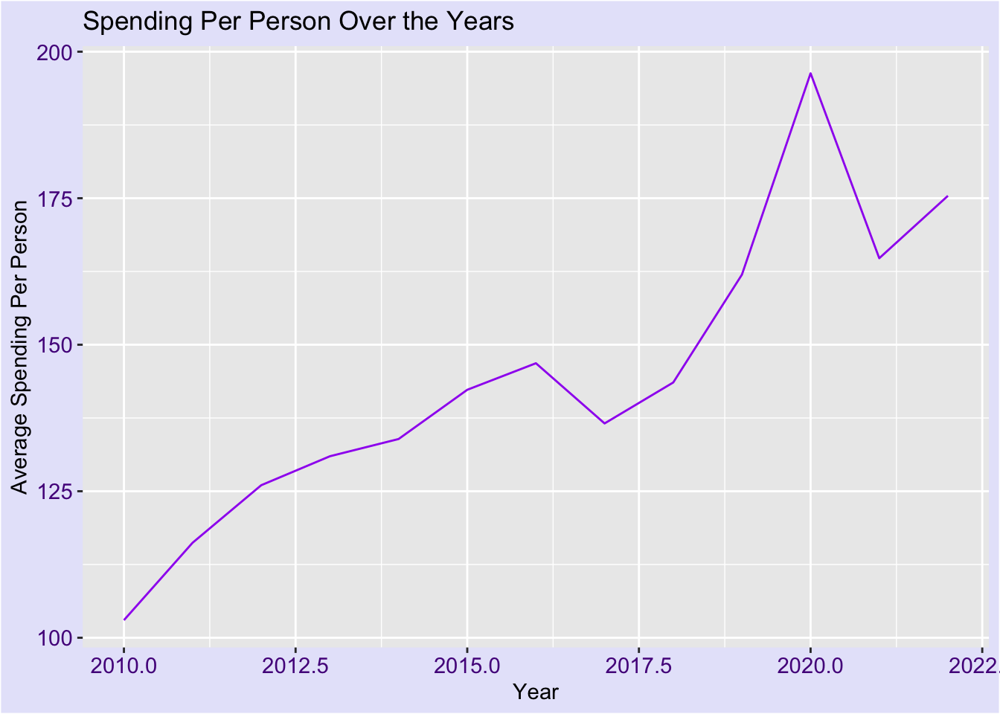
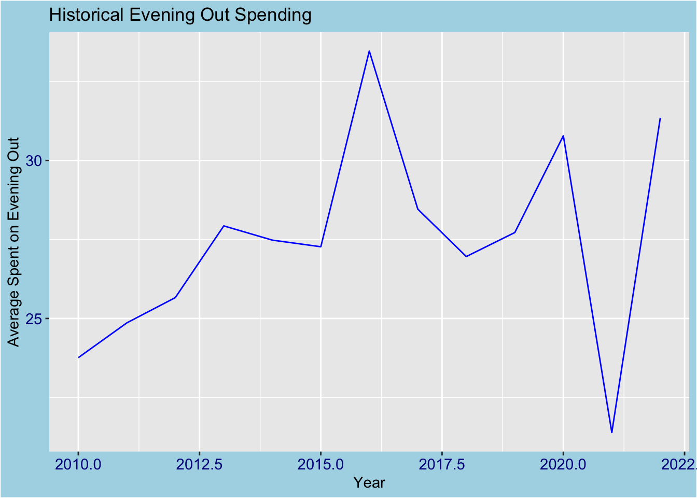

library(tidyverse)
library(here)
historical_spending1 <- read_csv(here("data/historical_spending.csv"))Intro: The data set I’m working with this week is from Historical Valentine’s Day spending from the years 2010 to 2022. On the tidyTuesday github repository, they state “The National Retail Federation in the United States conducts surveys and has created a Valentine’s Day Data Center so you can explore the data on how consumers celebrate.” This data set includes 13 rows for each year.
I will be exploring by year, the percent of people celebrating Valentines day and if that has changed throughout the years, and also if there is a trend in average spending in total for each year. I may also explore the trend in one of the specific items like flowers, evening out or jewelry just to see how pries have gone up over time on goods. One important thing to note is that the data collected is averages and doesn’t show much variability because of that, so my results are subjective and generalized.
The variables I’m most interested in are:
Year: Year between 2010 and 2022
PercentCelebrating: Percent of people celebrating Valentines Day
PerPerson: Average amount each person is spending
(Later decided) EveningOut: Average amount of money spent on evenings out
#Visualizing Overall trend in Celebration
ggplot(data = historical_spending1, aes(x = Year,
y = PercentCelebrating)) +
geom_line(colour = "magenta") +
theme(plot.background = element_rect(fill = "pink"),
axis.text = element_text(colour = "pink4", size = rel(1))) +
labs(title = "Valentines Day Celebration",
y = "Percent Celebrating")
As we can see from this plot, the percent of people celebrating Valentine’s Day based on data collected from the National Retail Federation has gone down since 2010, especially around the end of 2012 to 2014 where we see the percentage take a significant drop to below 55%, and furthermore the poin in 2019 drops to below 50%.
ggplot(historical_spending1, aes(x = Year, y = PerPerson)) +
geom_line(colour = "purple") +
theme(plot.background = element_rect(fill = "lavender"),
axis.text = element_text(colour = "purple4", size = rel(1))) +
labs(title = "Spending Per Person Over the Years",
x = "Year",
y = "Average Spending Per Person")
Although we did see an overall decrease in percent of people celebrating Valentine’s Day, we see an overall increase in average spending per person per year, and a spike in the year 2020. This information leads me to assumptions based on the data observed. First, inflation obviously has caused an increase in prices of commercial goods and services throughout time, so we see an increase in spending even though there has been a decrease in celebrating because everything is just more expensive in general. Another noted point is the spike at year 2020 leads me to think back to my Covid days, when holiday celebrations were no longer in person. This leads me to conclude that expressing your love for someone by mailing them or bringing them something makes up for not being able to see them in person, and online purchasing became very popular at this time influencing an increase in spending in general.
ggplot(data = historical_spending1, aes(x = Year,
y = EveningOut)) +
geom_line(colour = "blue") +
theme(plot.background = element_rect(fill = "lightblue"),
axis.text = element_text(colour = "darkblue", size = rel(1))) +
labs(title = "Historical Evening Out Spending",
y = "Average Spent on Evening Out") 
After seeing that in 2020 the average spending per person spiked, I mentioned that this was probably because online shopping became very popular during that year because of Covid. This made me curious about the EveningOut variable, because as we know during Covid doing anything outside of the house in public was not popular and advised against especially in early stages in 2020. The plot above shows similar results to what I was expecting to see, where they Year 2020 takes a large dropoff in average spending on EveningOut.
Conclusion: All in all, the questions I answered were (1) The percent of people celebrating Valentine’s Day throughout the years has decreased, (2) the trend in average spending per person per year has gone up per reasons mentioned with the plot, and (3) after noting the results of (2), the average spending in EveningOut dropped off in 2020, right where I expected it to. Flaws in my approach o analyzing the data I selected come with the fact that the data I chose was more for fun and less for finding actual facts, so it’s not very useful, but it is fun to explore in the way I did. If I had additional data and some more time, I would explore the changes in spending on each of different variables associated to different gifts, and I would be interested to see an average spending variable by region so see the spending distribution across the United States as well.
My visualizations are an effective way of communicating because the colors used are appropriate to what I am exploring, they are easy to perceive and aren’t too much, and the line plots are really beneficial when showing change through time because it makes a cohesive visualization.